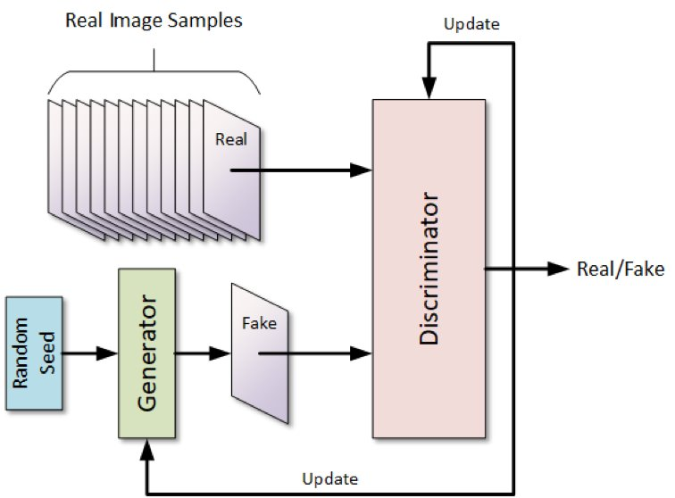

ERSTELLUNG, AUTHENTIFIZIERUNG UND MODELL-EVOLUTION
Ein GAN ist ein spezieller KI-Architekturtyp, der aus zwei konkurrierenden neuronalen Netzwerken besteht, die gegeneinander antreten, um extrem realistische neue Daten zu erschaffen. Man kann es sich wie einen Fälscher und einen Polizisten vorstellen.

Fälscher gegen Polizist
Ein GAN besteht immer aus zwei Teilen, die gleichzeitig trainiert werden:
- Der Generator (Der Fälscher)
- Der Diskriminator (Der Polizist)
Was er macht: Er beginnt mit zufälligem «Rauschen» (zufälligen Werten) und versucht, daraus neue Daten zu erzeugen (z. B. ein Bild, das wie ein Hund aussieht, oder eine gefälschte Finanztransaktion).
Sein Ziel: Er will den Discriminator täuschen und ihn dazu bringen zu glauben, die erzeugten Daten seien echt.
Was er macht: Er bekommt echte Daten aus dem Trainingsset und gefälschte Daten vom Generator. Er muss entscheiden, ob die ihm gezeigten Daten real oder fake sind.
Sein Ziel: Er will den Generator entlarven und Fälschungen korrekt als solche identifizieren.
Der Trainingsprozess (Das Wettrüsten)
Die beiden Netzwerke werden abwechselnd trainiert:
- Der Generator erzeugt etwas Falsches.
- Der Diskriminator bewertet es als Falsch.
- Der Generator lernt aus der Niederlage und verbessert seine Fälschung.
- Der Diskriminator wird besser darin, subtile Fehler in den Fälschungen zu finden.
Dieses ständige Kräftemessen führt dazu, dass der Generator am Ende Daten erzeugen kann, die von echten kaum zu unterscheiden sind.
Anwendungsbereiche
GANs sind besonders gut darin, synthetische, realistische Daten zu erzeugen:
- Bilderzeugung: Erstellung realistischer Bilder (Gesichter, Tiere, Szenen) oder Bearbeitung vorhandener Bilder (z. B. niedrig aufgelöste Bilder hochauflösend machen oder Schwarz-Weiss-Bilder einfärben).
- Datengenerierung (Data Augmentation): Erzeugung von synthetischen Trainingsdaten für andere KI-Modelle, besonders nützlich, wenn echte Daten knapp oder vertraulich sind (z. B. Erzeugung von seltenen Betrugsfällen für ein Betrugserkennungssystem).